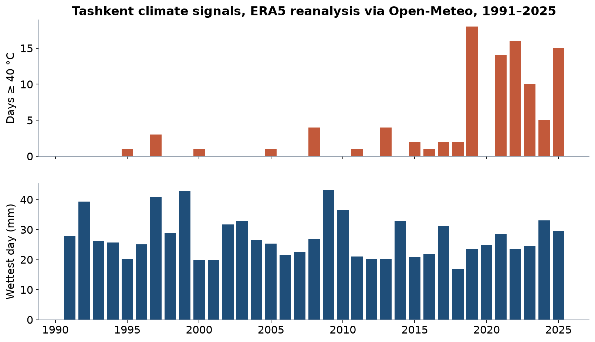
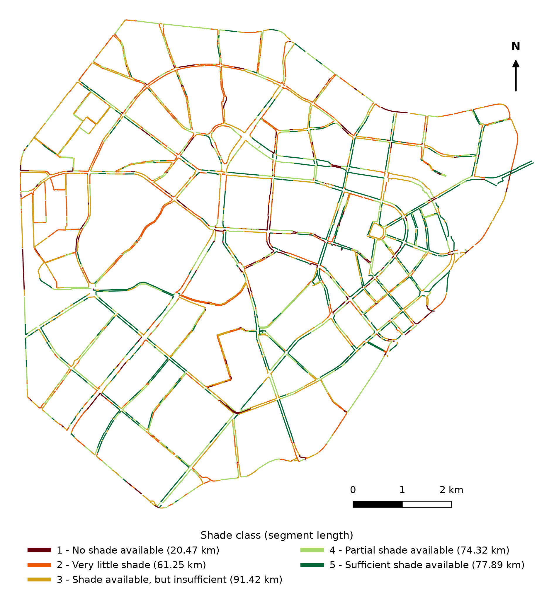
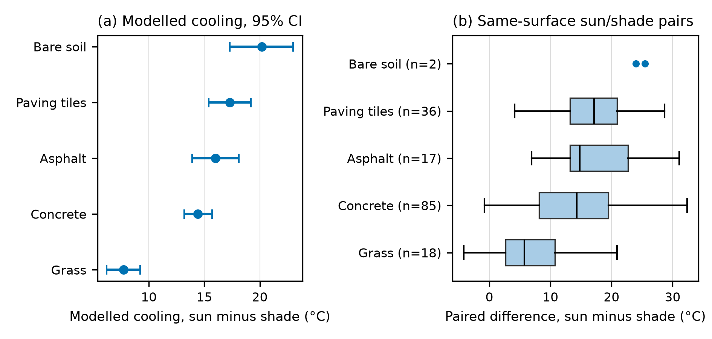
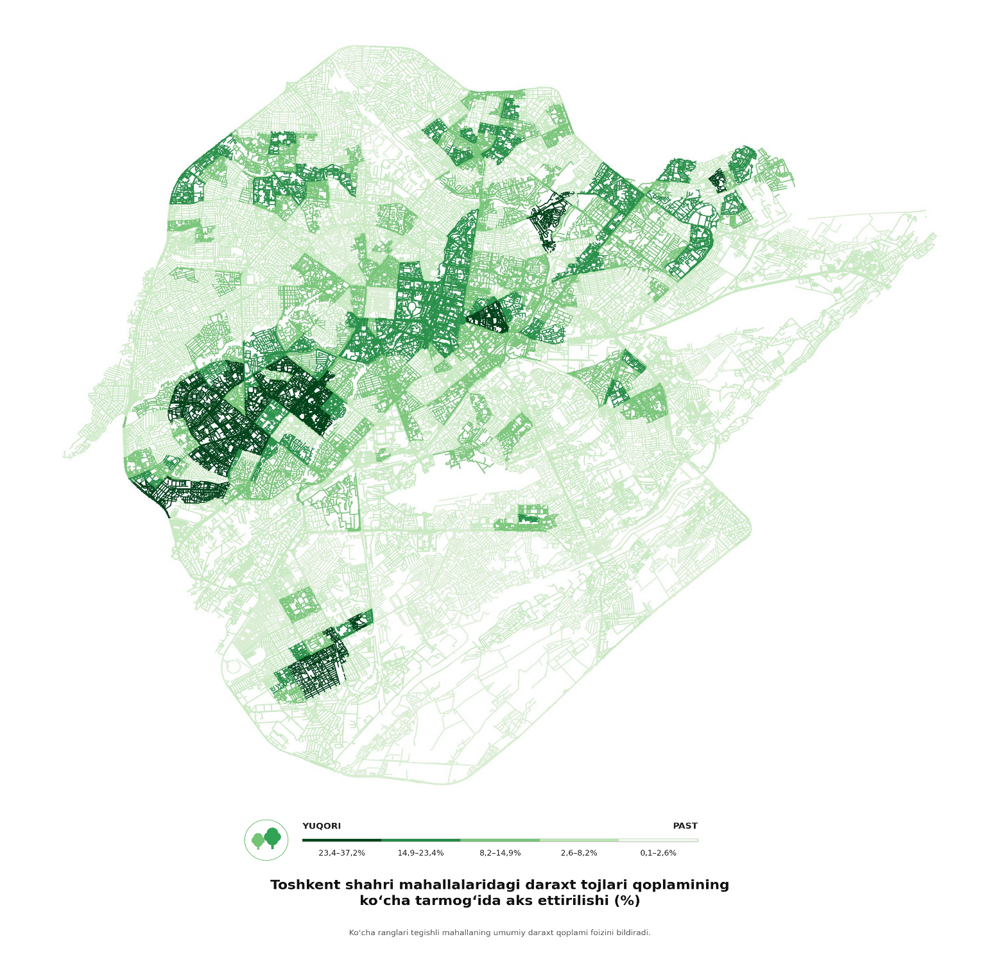
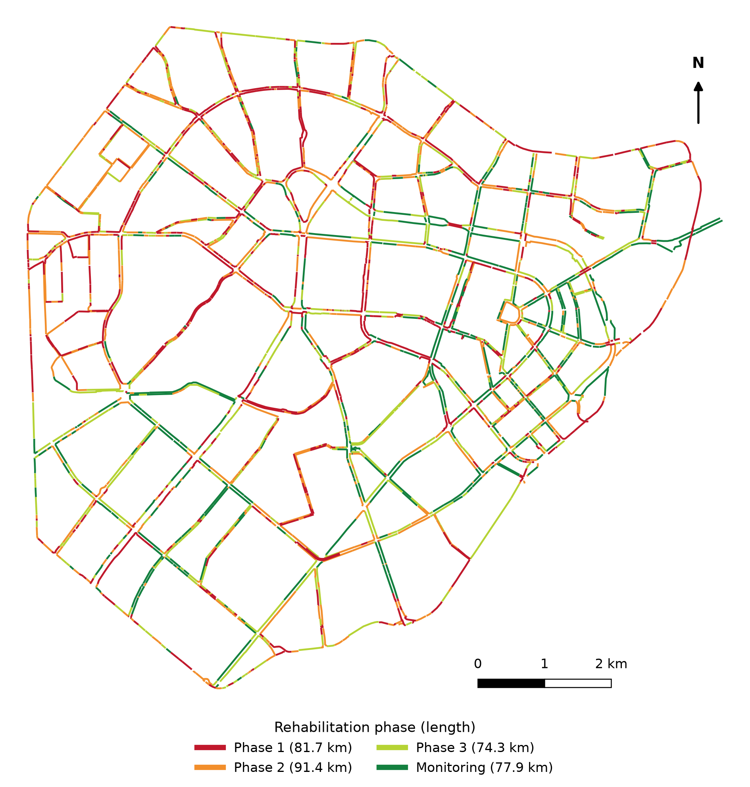
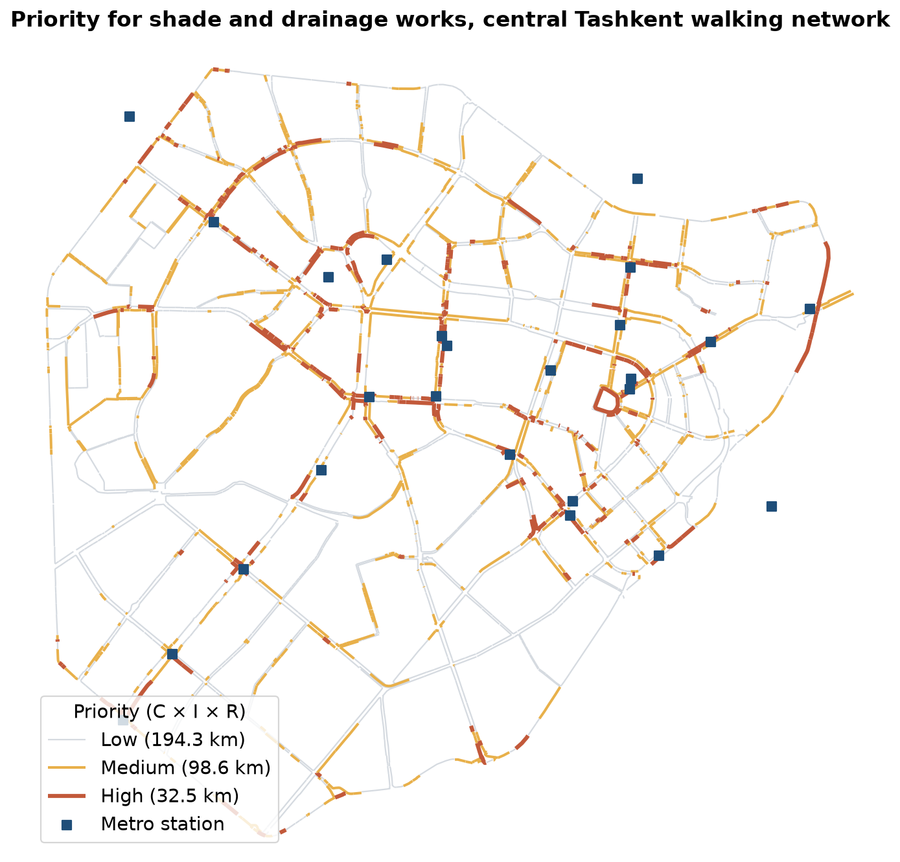

LEC18 · Climate-adapted streets and service continuity
Week 9 · Lecture 2
Climate-adapted streets and service continuity
LEC18 · Urban Transport Systems Planning and Design · TSTU · Prof. J. Sodikov
1 / 23
What you will be able to do after today
Apply a hazard–exposure–vulnerability framework to street assets
Describe Tashkent's heat and rainfall risks from open data
Use measured shade cooling to argue for trees on walking routes
Select and phase adaptation measures for a corridor
2 / 23
This lecture adds climate change to the management of street assets. You will apply a framework of hazard, exposure and vulnerability to street assets, and describe Tashkent's heat and rainfall risks from open data. You will use measured cooling from shade to argue for trees on walking routes. Finally, you will select adaptation measures for a corridor and put them in order over time.
Where this sits
Infrastructure management: keep infrastructure performing over its life — now under a changing climate
World Bank (2017): integrate climate change into road asset management
PIARC (2015): an international adaptation framework for road infrastructure
A published course on transportation policy: transport policy within environmental limits
3 / 23
Infrastructure management asks how to keep infrastructure performing over its life, now under a changing climate. The World Bank (2017) shows how to build climate change into road asset management. PIARC (2015) gives an international framework for adapting road infrastructure. A published course on transportation policy places transport policy within environmental limits.
Exposure: which assets and users are in the hazard's path
Vulnerability: how badly they fail — and how fast they recover
Criticality: what the network loses when that link fails
Adaptation reduces any of the three; monitoring tells you if it worked
4 / 23
Climate risk combines three parts. The hazard is the climate event, such as a heat wave, intense rain, flooding or a mudflow, and exposure is which assets and users lie in its path. Vulnerability is how badly they fail and how fast they recover. Criticality adds what the network loses when a link fails. Adaptation can reduce any part of the risk, and monitoring shows whether it worked.
The PIARC adaptation framework
Stage 1: set the scope, the climate variables and the assets at risk
Stage 2: assess vulnerability and rank the risks
Stage 3: develop and select adaptation responses
Stage 4: integrate the findings into planning, design and maintenance
5 / 23
The PIARC framework has four stages. Stage 1 sets the scope, the climate variables and the assets at risk. Stage 2 assesses vulnerability and ranks the risks, and Stage 3 develops and selects adaptation responses. Stage 4 builds the findings into planning, design and maintenance.
Tashkent's climate signals

ERA5 reanalysis grid point via Open-Meteo: days at or above 40 °C and the wettest day of each year.
6 / 23
The chart uses ERA5 reanalysis data for one grid point in Tashkent, taken from Open-Meteo. A reanalysis rebuilds past weather from observations and models on a grid, so its trend is more reliable than its exact values. The upper panel shows the days each year at or above 40 °C, and the lower panel shows the wettest day of each year. The lecture then gives the numbers behind both panels.
Hotter summers, short intense rain
Days a year at or above 40 °C rose from 0.5 (1991–2000) to 8.3 (2016–2025)
The hottest year in the record had 18 days (2019)
Heavy rain is rare — 3.7 days a year with 20 mm or more — but concentrated
Wettest day 1991–2025: 43.2 mm (2009)
Design for both: shade for long heat, drainage for short storms
7 / 23
Days a year at or above 40 °C rose from 0.5 in 1991–2000 to 8.3 in 2016–2025, and the hottest year, 2019, had 18 days. Heavy rain is rare, with 3.7 days a year with 20 mm or more, but it comes in short, intense storms. The wettest day between 1991 and 2025 brought 43.2 mm, in 2009. So streets need shade for long heat and drainage for short storms.
Heat on walking routes
Sodikov et al. (2026), 'Cool routes for a hot city' — shade survey and field temperature campaign
8 / 23
The next part of the lecture looks at heat on walking routes. It uses the chapter "Cool routes for a hot city" by Sodikov and colleagues (2026), written by Prof. Sodikov with D. Adizov. The chapter combines a survey of shade with a campaign of field temperature measurements.
Where people can walk in the shade

Walking shade survey of central Tashkent, classes 1 (no shade) to 5 (sufficient shade). Sodikov et al. (2026) Fig. 1-2.
9 / 23
The map shows the shade survey of central Tashkent's walking network. Each segment has a class from 1, no shade, to 5, sufficient shade. Shade is broken up: the class can change within a single block.
How hot it gets
325.4 km of the central walking network surveyed for shade
25.1% has no shade or very little shade
Air temperature at measurement points reached 45.8 °C
Sunlit surfaces reached 72.7 °C
10 / 23
The survey covered 325.4 km of the central walking network, and 25.1% of it has no shade or very little. At the measurement points, the air temperature reached 45.8 °C, and sunlit surfaces reached 72.7 °C.
How much shade cools

Sodikov et al. (2026) Fig. 1-4: modelled cooling by surface (a) and same-surface sun/shade pairs (b).
11 / 23
The figure, from the heat chapter, has two panels. Panel (a) shows the modelled cooling that shade gives on each surface type. Panel (b) compares sun and shade readings taken in pairs on the same surface. Compare grass with the paved surfaces: shade cools paving much more.
Shade cools the street, not the air
Full shade lowers surface temperature by 13.7 °C (12.9–14.5)
16.0 / 14.4 / 17.3 / 7.7 °C on asphalt / concrete / paving tiles / grass
Air temperature differs by only 0.5 °C: shade works on the radiant load on the walker
Landsat surface temperature hardly sees the footway: r = 0.17 with field readings
So map shade on the ground, not heat from satellites
12 / 23
In the chapter's model, full shade lowers surface temperature by 13.7 °C (12.9–14.5). By surface, the cooling is 16.0 / 14.4 / 17.3 / 7.7 °C on asphalt, concrete, paving tiles and grass. Air temperature differs by only 0.5 °C, so shade works by cutting the heat that radiates onto the walker. Landsat satellite surface temperature matches the field readings poorly, r = 0.17, so map shade on the ground, not heat from satellites.
Tree canopy by mahalla

Ergashova (2026): tree-canopy share of each mahalla shown on its streets (YUQORI = high, PAST = low).
13 / 23
The map, from Ergashova (2026), shows the tree-canopy share of each mahalla, drawn on its streets. The Uzbek labels read YUQORI for high and PAST for low. The outer parts of the city have little canopy.
Planting is infrastructure
Mahalla canopy ranges from 0.06–37.23%
46.1% of Pulatova's respondents say footways have no shade
On the ridden cycle network, greener segments are shadier (ρ = −0.64)
Trees need soil, water and protection during street works — budget them as assets
14 / 23
Tree canopy across mahallas ranges from 0.06% to 37.23%. In Pulatova's survey, 46.1% say footways have no shade. On the ridden cycle network, greener segments are shadier, with a correlation of ρ = −0.64 between greenery and light exposure. Trees need soil, water and protection during street works, so budget them as assets.
Rain, drainage and aryks
Aryks — open irrigation channels — water street trees and carry runoff
OSM maps 1,064.2 km (813.8 km of ditches, 200.2 km of canals) — far from complete
90.5% of the surveyed walking network has no mapped aryk within 15 m
Low points and underpasses flood first: terrain analysis finds them
Reconstructed streets without drainage repeat the problem (Pulatova)
15 / 23
Aryks are open irrigation channels that water street trees and carry runoff. OpenStreetMap maps 1,064.2 km of open waterways, including 813.8 km of ditches and 200.2 km of canals, but this is far from complete. For 90.5% of the surveyed walking network, there is no mapped aryk within 15 m. Low points and underpasses flood first, and terrain analysis can find them. Pulatova notes that streets reconstructed without drainage repeat the problem.
Alternative routes and vulnerable links
A link is critical when no reasonable alternative exists: bridges, underpasses, canal crossings
For walkers, a sunlit route in July is a failed link — a shaded parallel street is the alternative
For buses, works and floods need planned diversions, not improvised ones
Map critical links first, then protect or duplicate them
16 / 23
A link is critical when there is no reasonable alternative, such as a bridge, an underpass or a canal crossing. For walkers, a sunlit route in July is a failed link, and a shaded parallel street is the alternative. For buses, works and floods need planned diversions, not improvised ones. So map the critical links first, and then protect or duplicate them.
Phasing shade rehabilitation

Sodikov et al. (2026) Fig. 1-7: Phase 1 = no or very little shade; Phase 2 = insufficient; Phase 3 = partial.
17 / 23
The heat chapter puts the shade survey into phases of rehabilitation. Phase 1 has no or very little shade, Phase 2 has insufficient shade and Phase 3 has partial shade, and the rest is monitored. The lengths are 81.7 / 91.4 / 74.3 / 77.9 km for Phase 1, Phase 2, Phase 3 and monitoring. The worst-shaded streets come first.
Where to start: shade where people wait and walk
78.5 km of the unshaded Phase 1 length lies near a transit stop
LAB9 score: 32.5 km (356 segments) high priority, 98.6 km medium
20.2 km of the high-priority length lies within 400 m of a metro station
68.4 km need trees and a new water supply (no mapped aryk)
Start at metro stations and schools; plant continuous rows, not single trees

18 / 23
Of the unshaded Phase 1 length, 78.5 km lies close to a transit stop. The LAB9 score rates 32.5 km (356 segments) as high priority and 98.6 km as medium. Of the high-priority length, 20.2 km lies within 400 m of a metro station. In all, 68.4 km of poorly shaded walking network has no mapped aryk, so new trees there need a new water supply. Start at metro stations and schools, and plant continuous rows of trees, not single trees.
Selecting adaptation measures for Tashkent
Measure
Hazard addressed
Co-benefits
Watch out for
Continuous street-tree rows
Heat
Comfort, air quality, walking
Water supply, roots vs utilities
Restored open aryks
Heat, runoff
Irrigation, cooling
Litter, maintenance
Permeable paving and swales
Rainfall
Tree roots get water
Clogging, cost
Shaded stops and shelters
Heat
Ridership, waiting comfort
Shelter roofs alone are not enough
Light-coloured paving
Surface heat
Lower surface temperature
Glare and reflected heat on walkers
19 / 23
The table compares five adaptation measures by the hazard they address, their co-benefits and their risks. Continuous rows of street trees fight heat and improve comfort, but they need water and can clash with utilities. Restored open aryks help with heat and runoff, and permeable paving and swales handle rain. Shaded stops need more than a shelter roof, and light-coloured paving can cause glare and reflect heat onto walkers.
Discussion
Which single link on your corridor would fail first in a July heat wave or a summer storm — and what is the alternative route?
Name the hazard, the users exposed and the measure.
20 / 23
This question asks you to find the link on your corridor that would fail first in a July heat wave or a summer storm. Name the hazard, the users exposed and the measure you would take. Then name the alternative route that people or buses could use.
Tashkent's heat days are rising; full shade cools walking surfaces by 13.7 °C
Trees and aryks are infrastructure with condition, water needs and owners
Prioritise shade and drainage where people walk and wait
21 / 23
Climate risk combines hazard, exposure and vulnerability, and adaptation belongs in asset management. Tashkent has more hot days than before, and full shade cools walking surfaces by 13.7 °C. Trees and aryks are infrastructure, with a condition, water needs and owners. Put shade and drainage first where people walk and wait.
References
World Bank (2017). Integrating Climate Change into Road Asset Management. Washington, DC: World Bank. https://openknowledge.worldbank.org/entities/publication/0c6626a3-7fcc-5de7-9ec0-4c2234f91c8a
TU Delft, Department of Transport & Planning. CIEM6250 Transport Systems Design — units B-1 Network Design, B-2 Service Design, B-3 Physical Infrastructure Management, B-4 Traffic Operations Management (Smart Public Transport Lab education page; MSc Civil Engineering TTE track). https://www.tudelft.nl/citg/over-faculteit/afdelingen/transport-planning/research/labs/smart-public-transport-lab/education
PIARC (2015). International Climate Change Adaptation Framework for Road Infrastructure (Technical Committee E.1, report 2015R03EN). Paris: World Road Association. https://www.piarc.org/en/order-library/23517-en-International%20climate%20change%20adaptation%20framework%20for%20road%20infrastructure
Salvucci, F., & Coughlin, J. (2004). 1.253J/11.543J Transportation Policy and Environmental Limits, Spring 2004. MIT OpenCourseWare. https://ocw.mit.edu/courses/1-253j-transportation-policy-and-environmental-limits-spring-2004/
Open-Meteo (2026). Historical Weather API (ERA5 reanalysis), Tashkent. https://open-meteo.com/en/docs/historical-weather-api
Sodikov, J. I., et al. (2026). Urban heat actions of 100 global cities: Tashkent, Uzbekistan (book chapter manuscript).
Ergashova, M. Z. (2026). 15-minute walkability of Tashkent mahallas — dissertation defence presentation, 14 Oct 2026 (in Uzbek). Tashkent State Transport University.
Pulatova, Z. S. (2024). Walkability assessment of Tashkent city districts (PhD dissertation, in Uzbek; supervisor J. I. Sodikov). Tashkent State Transport University.
Normukhammadov, A. (2026). Pedalling Towards Sustainability: Developing an Integrated Bicycle Network for Enhanced Urban Mobility in Tashkent City (PhD thesis draft; supervisor J. I. Sodikov). Tashkent State Transport University.
Sodikov, J. I., et al. (2025). Urban terrain morphometry for transport planning: a GIS-based analysis of Tashkent using open DEMs. Vibroengineering Procedia. https://www.extrica.com